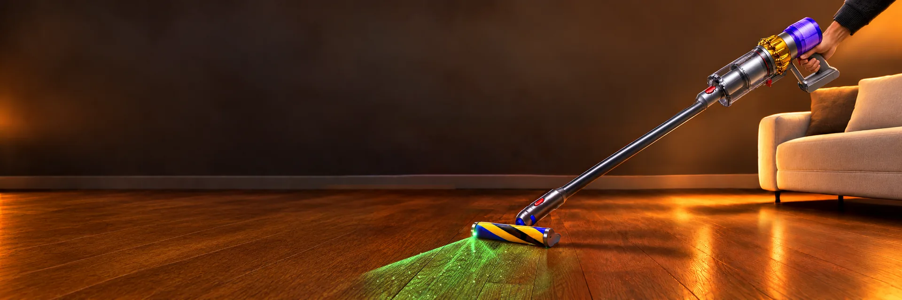
AI pipeline
The team’s experience stays with the company
And it works better with every task.
- Experience staysSteps, rules and good examples live inside the typical task. Whoever takes it gets them.
- Fewer revisionsNorms and checklists live inside the typical task. Revision rounds are measured in the Standards case.
- The cost of work is visibleEach task type has an hours norm based on closed tasks. Plan vs actual is in the Standards case.
- New people ramp up fasterThey start from the task log and examples, not from asking around.
I run this in Notion, collected by automation. It carries over to any database where the team already tracks work.
AI_PIPELINE_/_01
A pipeline built for a team
I lay the groundwork: techniques, product knowledge, company style, skills and typical tasks. Knowledge builds up around typical tasks and moves between people and teams.
The team fills it in themselves: with Claude or with me they add techniques, knowledge of the product and the audience, and the company’s tone of voice.
Images are generated with ChatGPT Images 2.6, retouching is done by Claude. It learns as it works: its editing tools and experience keep growing.
Techniqueslight, framing, retouching
Product & audiencehow it works, who buys it
Company styletone, brand kit, characters
Skillsrules and an experience log
Typical tasksbanner · mockup · resize
Team member 1takes the task with the knowledge ready
Team member 2another story, same product
Another teamanother format, same rules
The team adds to the knowledge themselves — with Claude or with me
AI_PIPELINE_/_02
Data first, then the picture
A concept starts with data. The neural network collects it from three sources: what buyers write, what the brand already runs in its ads, and what the company tells shareholders. I draw the conclusions and set the hypothesis with a test threshold.
- Reddit reviewsFor Dyson, four buyers described the shock of dirt on a “clean” floor; the concept grew from that.
- Meta Ad LibraryOn 5 November Dyson had 63 active US ads, 12 of them selling on discount, and none showing the V15 laser. The concept uses the laser to show invisible dust, which their ads never do.
- Shareholder letters18% of Airbnb nights are stays of 28+ days, Q3 2023. The concept’s test threshold starts from that base: +20% to the share of such bookings.
AI_PIPELINE_/_03
Dyson: hard retouching
The most demanding work in the pipeline is an ad concept for the Dyson V15: the green laser on the floor, the hand and the proportions of the vacuum, cleaning up the frame. The accepted wide frame took about sixty rounds.
Generation is ChatGPT Images 2.6, retouching is Claude. Over this concept Claude built its own editing tools: laser light, dust specks, rotating and scaling the body, a SAM 2 object mask.
A frame from the second angle became the reference. We turned every note into a number on the reference first, then fixed and measured again.
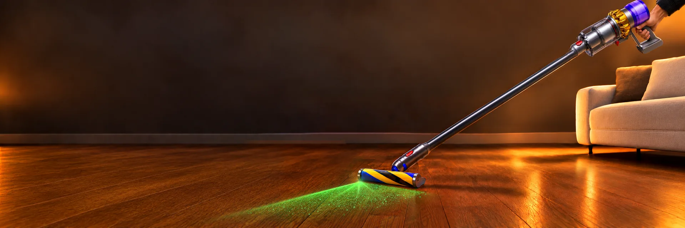
AI_PIPELINE_/_04
Laser, masking and the hand
The laser went through twenty versions in two days: one fix kept breaking what had already been accepted. Since then, everything accepted is a check every new version has to pass. Light fans out from the beam and fades towards the other edge; dust fades with distance: the reference has 700–800 small and 35–70 large specks per 10,000 beam pixels.
To fix the body, it has to be isolated precisely. For that Claude installed SAM 2, a local neural network. The first mask came out patchy; after refinement the whole object is selected: it can be scaled down and moved, and the wall behind it is repainted.
After the move the arm bent at the elbow; it was straightened. The dark band on the wall under the bin and the clipped corner of the handle went away once the object was cut out along the mask.
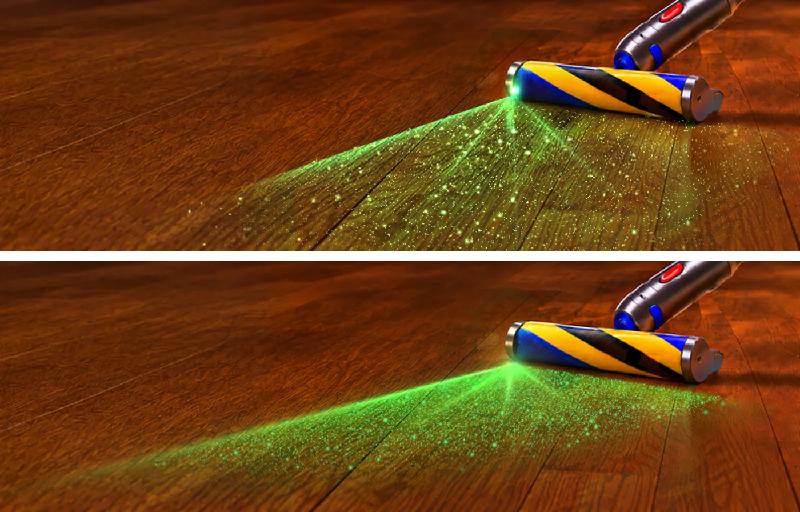
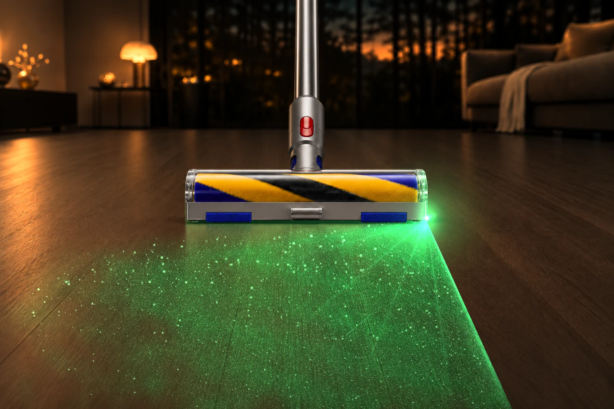
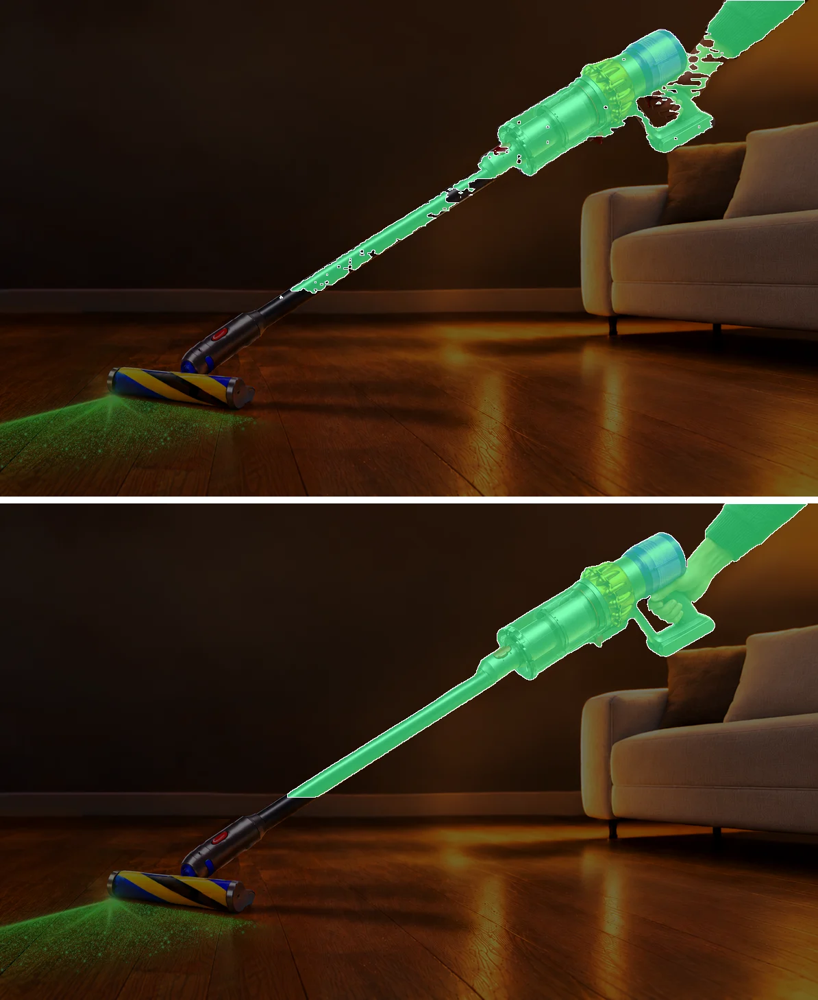
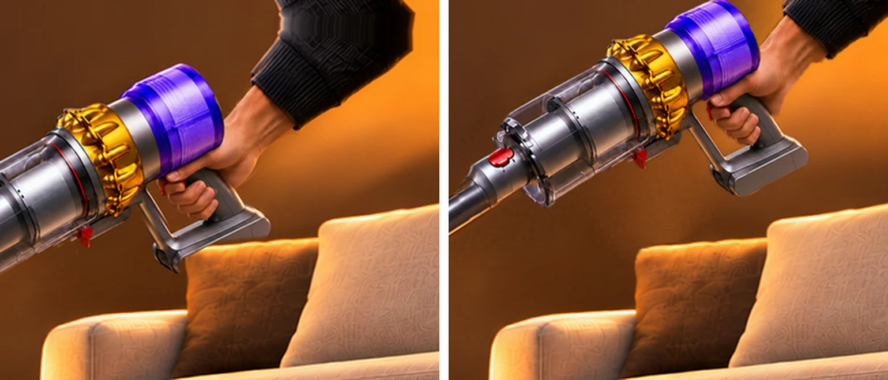
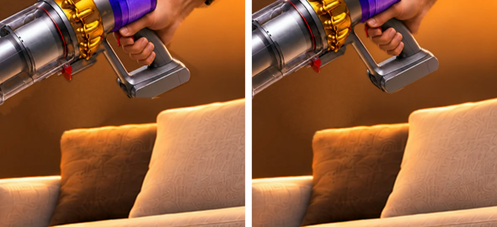
AI_PIPELINE_/_05
Airbnb: seven formats per story
The second example is the Airbnb “A month as a base” concept. Three stories: an office, a room and a spare key. Each is laid out in seven formats, from a 3:1 billboard to a 9:16 story.
Each format gets its own recomposed frame: objects stay whole and the text never runs over them. One script places the headline, caption and logo with one set of spacing rules. My layout fixes become rules for every format: the inner gap is smaller than the outer one, and a long headline in a tall format breaks into two lines when there is room.
Resize map · 7 formats per story
Office
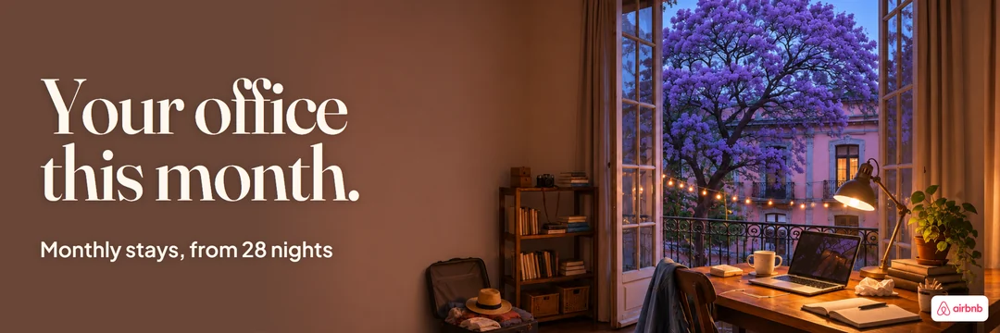
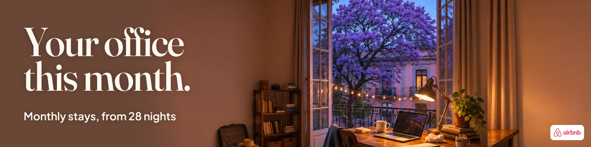
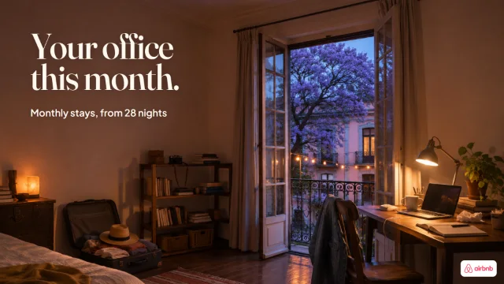
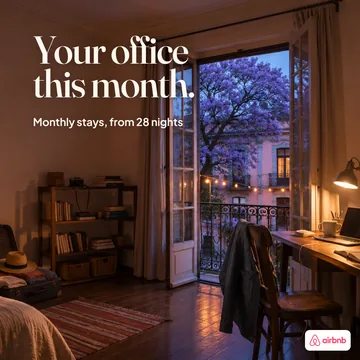
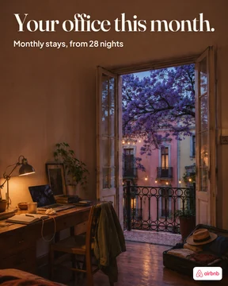
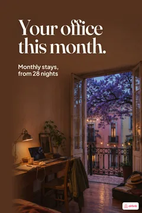
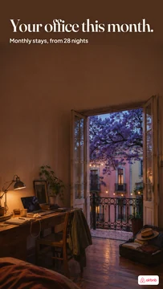
Room
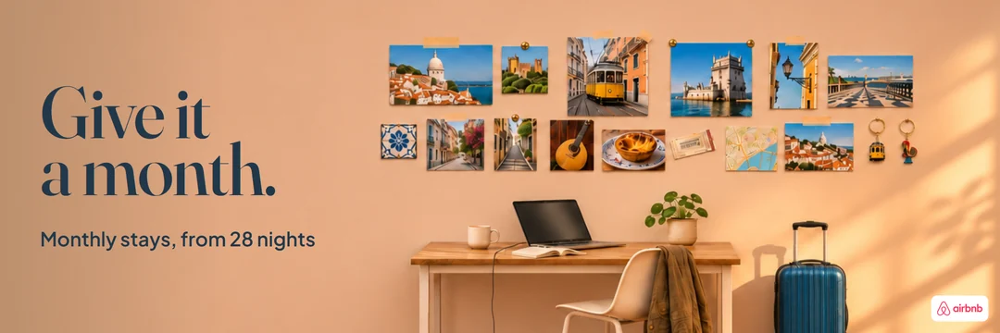
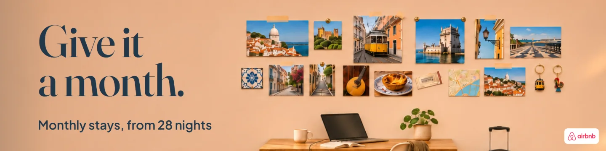
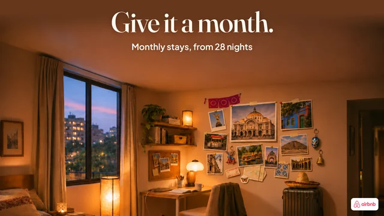
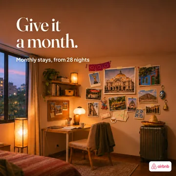
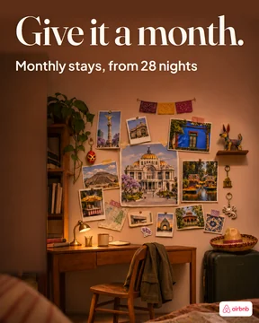
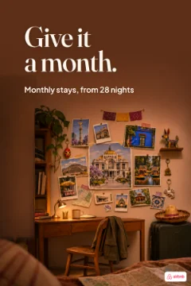
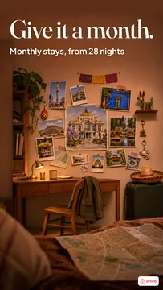
Key
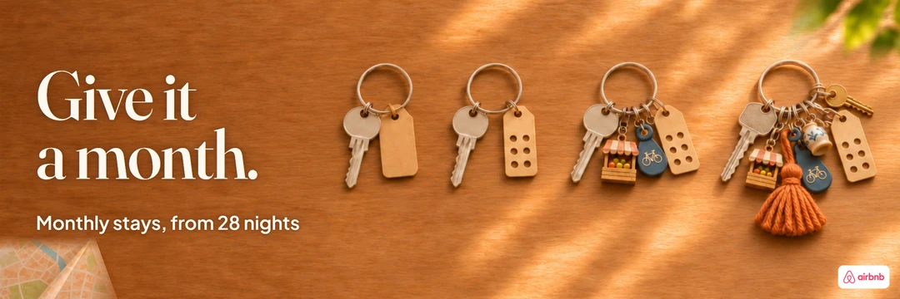
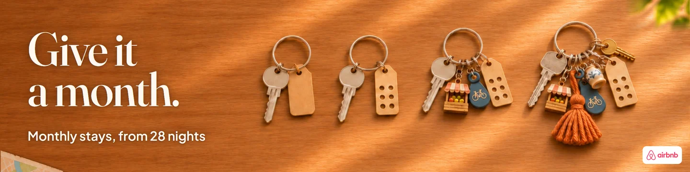
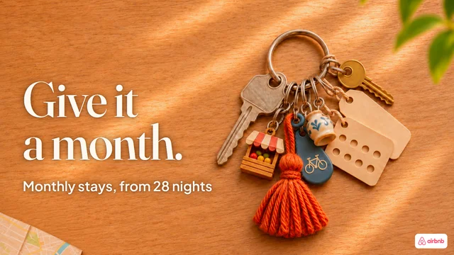
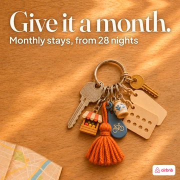
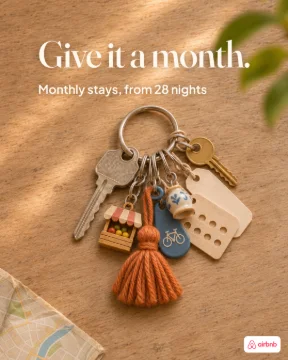
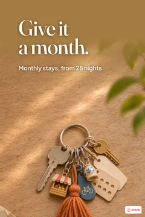
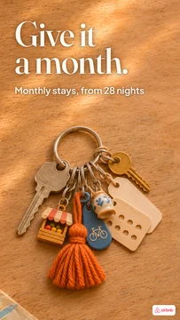
3:1 · 4:1 · 16:9 · 1:1 · 4:5 · 2:3 · 9:16 — from billboard to story.
AI_PIPELINE_/_06
Airbnb: how the frame is built
I check all 21 resizes and 12 mockups against one grid: the rule of thirds. The main object takes up a third to a half of the frame area and sits on a thirds line. Empty space either holds the copy or leads the eye to the hero. A script measures the hero's share on the finished image. A frame below the norm gets rebuilt, or stays when I know what it costs.
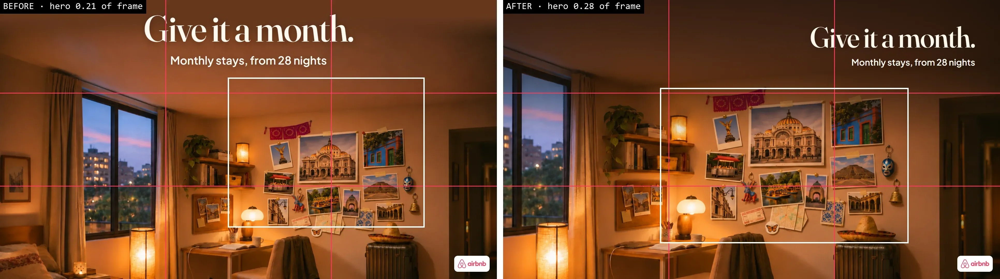
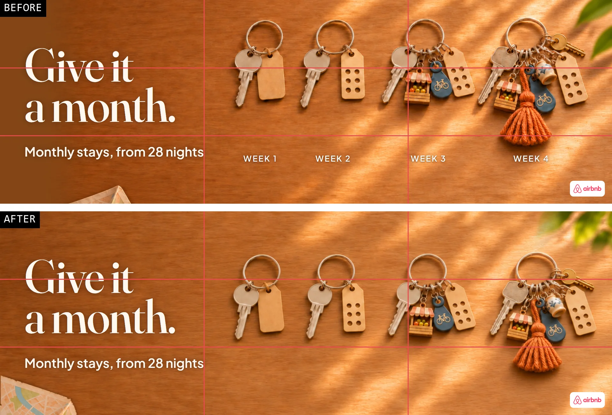
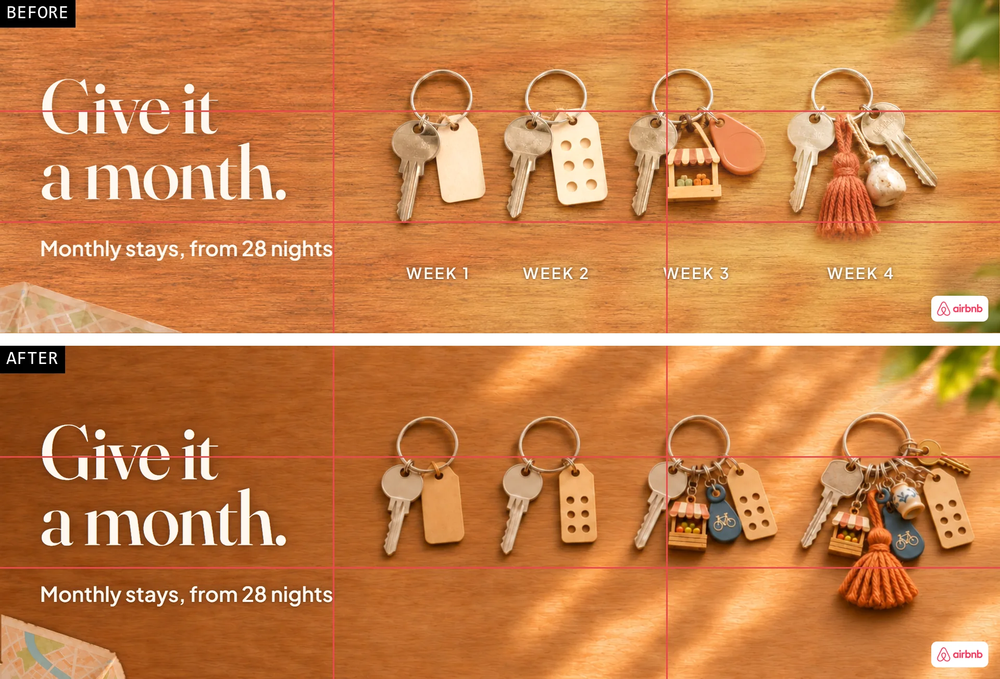
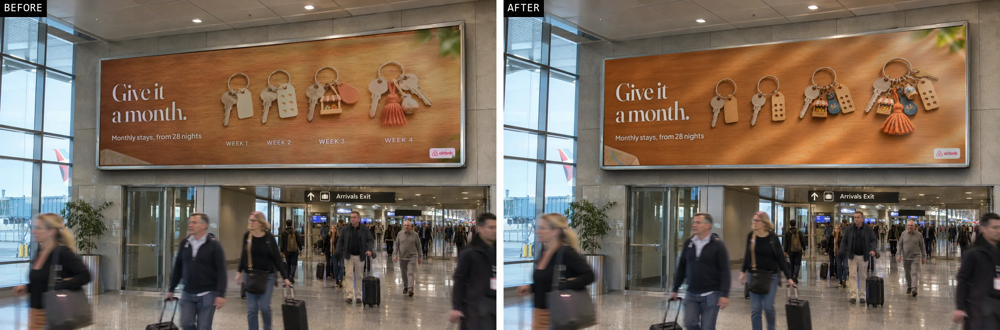
- HeroA third to a half of the frame, on a thirds line. I never crop the hero, and the frame edges never cut at a joint.
- CopyOn a flat surface, never on the horizon line. The text colour comes from the scene itself.
- SeamWhen a piece of the scene is missing, the generator paints it in whole, in one pass. Stitching in code gave double outlines and translucent copies of objects.
- RulesEvery repeated note becomes a rule, and the next frame is checked against them before anyone sees it.
AI_PIPELINE_/_07
Typical tasks and their metrics
The RAWMID design department's task base holds 1,171 tasks. They are grouped into 33 typical tasks, each with its own hours norm.
A norm is the median of closed tasks and is recalculated with every new one. You can see where revisions repeat and what each type of work costs.
1,171tasks↓33typical
- Print176 tasks
- Video covers140 tasks4.5 h
- Video lower thirds133 tasks2.5 h
- Post copy30 tasks3.5 h
YouTube cover
2.6–8.5 h- 5
- steps
- 2
- rules
- 15
- good examples
The AI pulls them into every new cover and answers the designer by this guide.
AI_PIPELINE_/_08
How the knowledge moves on
Every fix goes into an experience log with a status: said once, confirmed, dropped. What is confirmed becomes a skill rule, and the next frame starts from it.
Product knowledge built on the laser and proportions works in other stories and formats: wide banner, vertical, post, story, email.
The log sits next to the work. Whoever takes a typical task starts from it.
A new person takes a typical task and gets the log and examples right away. Experience does not leave with people.
- Said once
- Confirmed
- Skill rule
- The next task starts from it